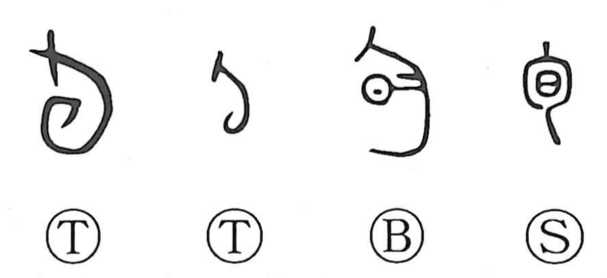

Explanation
旬 is a compound of 勹 and 日. In oracle-bone and bronze forms, the core element is a dragon with its tail coiled; this coiled-tail sign alone marked a span of ten days. The shape echoes 云 (雲) “cloud,” which in archaic writing shows the dragon’s rolled tail just visible beneath the clouds. The ten-day unit was pictured with a dragon because a dragon-form deity was thought to govern the fortunes of each such cycle. In the Yin (Shang) calendar a 旬 was ten days; later, adding 日 made its time value explicit and yielded the present form 旬. Hence 旬 came to mean a ten-day period and, by extension, the timely “in-season” moment. Because a 旬 is something that turns in steady succession, the related graph 徇 carries the sense of revolving in sequence.